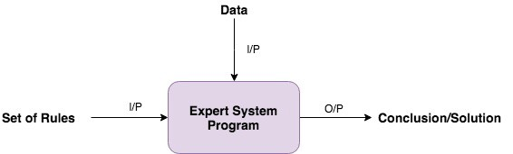
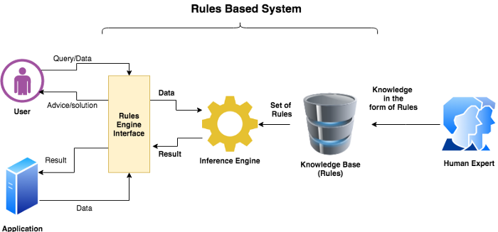
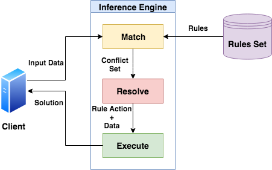
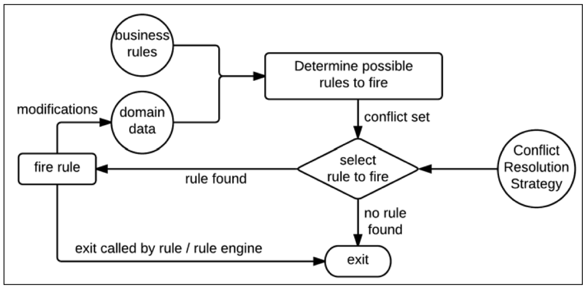
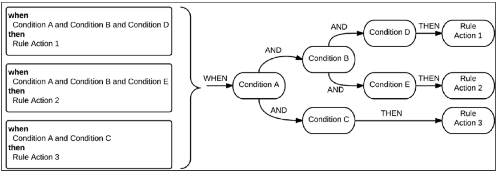

JSR 94 Rule Engine API【翻译】
文章节选部分并翻译自：Getting Started With the Java Rule Engine API (JSR 94): Toward Rule-Based Applications
Java 规则引擎 API (JSR 94) 规范是通过 Java Community Process (JCP) 项目开发的，它通过提供一个简单的 API 来访问来自 Java 平台标准版的规则引擎，从而为规则引擎定义了 Java 运行时 API（ Java SE）或 Java Platform Enterprise Edition（Java EE）Java 技术客户端。本文概述了 JSR 94，并讨论了如何将业务规则技术融入 Java 技术应用程序中。示例代码展示了开发基于规则的应用程序所涉及的工作。
引言
许多业务应用程序必须应对市场经济的动态变化。例如，用于保险和银行业的应用程序必须能够适应在设计过程中没有人能够预测或计划的不可避免的市场变化。一个解决方案是拥有一个规则引擎，它根本上是一组工具，使业务分析师和开发人员能够根据组织的数据构建决策逻辑。规则引擎应用最终用户定义的规则和操作，而不会影响应用程序的运行方式。该应用程序是为处理单独设计的规则而构建的。
规则引擎的示例包括 Drools、Fair Isaac Blaze Advisor、ILOG JRules 和 Jess，仅举几例。然而，缺乏标准可能是阻止企业使用基于规则的应用程序的主要因素。大多数规则引擎都有专有的 API，这使得它们很难与应用程序集成。如果不再支持某个规则引擎，而业务决定采用其他规则引擎，则需要重写大部分应用程序代码。JSR 94 尝试标准化 Java 技术的规则引擎实现。前面提到的四个规则引擎都支持 JSR 94。
JSR 94 为规则管理和规则运行时 API 提供了指南，但它没有定义用于定义规则和操作的语言的指南。正在努力标准化通用规则语言，包括 规则标记语言 (RuleML)。
Rule Engine
规则引擎的基本思想是将业务或应用程序逻辑外部化。 规则引擎可以被视为一个复杂的 if-then 语句解释器。if-then 语句是规则。规则由条件和动作两部分组成：当条件满足时，动作被执行。if 部分包含条件（例如金额 >=$100），then 部分包含操作（例如优惠折扣 5%）。规则引擎的输入是称为规则执行集和数据对象的规则集合。输出由输入决定，可能包括经过修改的原始输入数据对象、新数据对象和可能的副作用（例如向客户发送电子邮件）。
规则引擎应该用于具有高度动态业务逻辑的应用程序以及允许最终用户编写业务规则的应用程序。规则引擎是高效决策的绝佳工具，因为它可以快速、可靠和重复地根据数以千计的事实做出决策。
规则引擎允许对于在开发周期外的人制定的规则能够快速响应，快速部署。
术语
-
规则 - Rule：一组条件（condition），然后是一组动作（action）。它代表了系统的逻辑。规则主要以 if-then 形式表示。它主要包含条件和动作两部分。规则有时也被称为作业（production）。
Rule = Condition + Action
条件也称为事实（fact）或前因（antecedents）或模式（pattern）。动作也被称为结果（consequent）。
规则在以下原则上工作：
- 它们是相互独立的
- 很容易变更（修改、移除、增加）
- 每个规则控制最小数量的所需信息，原子性
- 可以允许不同背景的人协作
-
人类专家：相应业务领域的专家。这个人以规则的形式提供知识（Knowledge）。
规则形式的知识：
1
2
3
4
5
6
7
8
9
10
11
12
13
14Rule 1: 一个人是否有资格获得住房贷款？
if:
1. 他的月薪超过 7K。
2. 他的征信评分超过 80。
then:
1. 获批房屋贷款。
2. 获批房屋贷款总额的 30%。
Rule 2: 一个人是否有资格获得住房贷款？
if:
1. 他的月薪超过 15K。
2. 他的征信评分超过 70。
then:
1. 获批房屋贷款。
2. 获批房屋贷款总额的 60%。 -
专家系统 - Expert System：它是一个使用人类专家的知识来解决问题并给出解决方案的程序。它也被称为基于规则的系统或者作业系统。

-
推理引擎 - Inference Engine：它是专家系统的大脑，管理专家系统内部的大量规则和事实。它的工作是挑选规则并应用数据并生成解决方案。我们将详细讨论它。
规则引擎，也是一个专家系统程序，它对数据运行规则，如果有任何条件匹配，则执行相应的动作。

在上图中，表明我们以规则（if-then 形式）的形式收集知识并将它们放置在任意的存储系统中，如文件或数据库。现在推理引擎根据需求选择规则并在输入数据或查询上运行它们。如果任何模式/条件匹配，则它执行相应的操作并返回结果或解决方案。
推理引擎
推理引擎是专家系统的核心组成部分，它将逻辑规则应用于知识库，从已知事实中推断出新信息。推理引擎通常以两种模式运行，它们是：
-
数据驱动，其基本思想是：从问题已有的事实（初始证据）出发，正向使用规则，当规则的条件部分与已有的事实匹配时，就把该规则作为可用规则放入候选规则队列中，然后通过冲突消解，在候选队列中选择一条规则作为启用规则进行推理，并将其结论放入数据库中，作为下一步推理时的证据。如此重复这个过程，直到再无可用规则可被选用或者求得了所要求的解为止。
例如：假如我们想根据给定的规则和数据知道名字为 Fritz 宠物的肤色。
Rules：
1 | 1. if X 呱呱叫 and X 吃苍蝇 - then X 是一只青蛙 |
Data:
1 | 1. Fritz 呱呱叫 |
根据给定的规则和数据我们可以提取到以下信息：
1 | Fritz 是青蛙。 |
-
目标驱动，它是首先提出某个假设，然后寻找支持该假设的证据，若所需的证据都能找到，说明原假设是正确的；若无论如何都找不到所需要的证据，则说明原假设不成立，此时需要另做新的假设。
还有一类称为 双向推理 - Hybrid chaining，它是正向和反向推理的组合。
推理引擎的程序分三个阶段工作，以对给定数据执行规则。

阶段 1 — 匹配 Match：在此阶段，推理引擎将事实和数据与规则集进行匹配。这个过程称为模式匹配。
我们可以用于模式匹配的算法有：
- Linear
- Rete
- Treat
- Leaps
Drools 是规则引擎的实现之一，使用 Rete 算法变种 Phreak 算法 进行模式匹配。它是模式匹配的最佳算法之一。
第一阶段的输出是一个冲突集（Conflict Set）。冲突集意味着，对于相同的事实或条件，可能满足不止一个规则。所以它返回冲突规则集。
阶段 2 — 解决 Resolve：在此阶段，推理引擎管理冲突规则的顺序。它解决了冲突并给出了选定的规则。为了解决冲突，它可以使用以下任何算法。
- Lex
- Recency
- MEA
- Refactor
- Priority wise

阶段 3 — 执行 Execute：在此阶段，推理引擎仅对给定数据运行所选规则的动作，并将输出/结果返回给客户端。
使用规则引擎的时间、地点和原因
规则引擎在应用程序中用于替换和管理一些业务逻辑。它们最适用于业务逻辑过于动态而无法在源代码级别进行管理的应用程序——也就是说，业务策略的更改需要立即反映在应用程序中。保险（例如保险评级）、金融服务（贷款、欺诈检测、索赔路由和管理）、政府（申请流程和税收计算）、电信客户服务和计费（需要的长途电话促销）等领域的应用集成到计费系统中）、电子商务（个性化用户体验）等都可以从使用规则引擎中受益匪浅。
基于规则的应用程序通过传入要执行的规则集来与规则引擎进行通信。然后，应用程序可以检查结果并将其显示给最终用户或执行进一步处理。规则引擎根据规则所需的输入以及从先前规则的评估中获得的结果来确定何时评估每个规则。您不需要指定规则的顺序或依赖关系。
例如，在 Java EE 企业应用程序中，规则可以适合如下应用程序：
- 在应用层管理动态业务逻辑和任务流
- 在表现层自定义页面流程和工作流程，以及根据会话状态构建自定义页面
为您的应用程序采用基于规则的方法具有以下优势：
- 代表策略的规则很容易传达和理解。
- 规则比传统的编程语言保持更高级别的独立性。
- 规则将知识与其实现逻辑分开。
- 无需更改源代码即可更改规则；因此，无需重新编译应用程序的代码。
然而，这些好处并非没有代价。与任何工具一样，将规则引擎集成到您的应用程序中的决定应基于成本与收益。成本包括学习曲线以及在应用程序和规则引擎之间构建接口所涉及的工作。此外，不同的规则引擎使用不同的格式和语法来定义规则。因此，如果组织决定从一种规则引擎转移到另一种规则引擎，业务分析师和开发人员必须学习和了解另一种工具的操作。
JSR 94
JSR 94 定义了一个简单的 API，用于从 Java SE 或 Java EE 客户端访问规则引擎。它提供 API
- 注册和注销规则
- 解析规则
- 检查规则元数据
- 执行规则
- 检索结果
- 过滤结果
请注意，JSR 94 未对以下内容进行标准化：
- 规则引擎本身
- 规则的执行流程
- 用于描述规则的语言
- Java EE 技术的部署机制
换句话说，它没有标准化规则执行的语义。
JSR 94 架构
API 定义在两个主要包中：
- 规则管理员 API：这个 API 在
javax.rules.admin包中定义 ，提供可用于加载规则和关联动作来作为执行集的类。一个 rule execution set - 规则执行集是规则的集合。规则可以从外部资源加载，例如 URI、一个InpuTStream、一个 XMLElement、一个二元抽象语法树或一个Reader。它还提供了注册和取消注册规则执行集的方法。此包还可用于定义对执行集的权限以提供访问授权。 - 运行时客户端 API：此 API 在
javax.rules包中定义 ，提供客户端使用的类来运行规则并获取结果。只能访问使用规则管理器 API 注册的规则。此 API 使客户端能够获取规则会话并在该会话中执行规则。
JSR 94 专家组决定使用两个单独的包来加强以下区别：(1) 执行管理员 API 先前加载并注册到运行时环境中的规则执行集和 (2) 动态加载和执行外部资源（只能通过使用规则管理员 API 来执行）。此外，分离允许对用户群进行更细粒度的控制，允许一些用户执行规则但不能管理它们。
规则管理员 API
此 API 使用 RuleServiceProvider 该类获取 RuleAdministrator 接口的实例，该实例提供注册和取消注册执行集的方法。管理员 API 的高级功能如下：
- 它通过
RuleServiceProvider类获取接口RuleAdministrator的实例 - 它从外部可序列化或不可序列化的资源创建一个
RuleExecutionSet，包括org.w3c.dom.Element用于从 XML 子文档中读取java.io.InputStream用于从二进制流中读取java.lang.Object用于从特定于供应商的抽象语法树中读取java.io.Reader用于从字符流中读取java.lang.String用于从 URI 中读取
- 它根据 URI 注册
RuleExecutionSet对象以供RuleRuntime使用。 - 它根据 URI 取消注册
RuleExecutionSet对象，因此不再可以从RuleRuntime访问它。 - 它通过从
RuleExecutionSet检索Rule对象列表来查询规则执行集的结构元数据。 - 它在规则执行集和规则上设置和获取应用程序或供应商特定的属性。
运行时客户端 API
此 API 以类似于 Java 数据库连接 (JDBC) 软件的方式提供对规则引擎 API 的供应商实现的访问。供应商通过 RuleServiceProvider 类向客户公开他们的规则引擎实现。此类提供对运行时和管理 API 的访问。供应商提供唯一标识实现的规则服务提供程序 URL。所有规则服务提供者都应该注册一个 RuleServiceProviderManager 对象，以便客户端可以访问。
这个 API 的核心是 RuleRuntime 接口，它提供了允许客户端创建 RuleSession 用于运行规则的方法。RuleSession 是客户端和规则引擎之间的运行时连接；它与单个规则执行集相关联，可能会消耗规则引擎资源，但当客户端不再需要规则会话时，必须明确释放规则会话。因此，规则会话做了两件事：
- 它提供了一种机制来访问向规则服务提供者注册的所有规则执行集的列表。
- 它定义了客户端希望建立的会话类型：有状态或无状态。
statelessRuleSession无状态规则会话提供了高性能和简单的 API，该 API 执行具有输入对象列表的规则执行集。无状态规则会话方法是幂等的。statefulRuleSession有状态规则会话允许客户端与规则执行集合进行长时间的交互。输入对象可以逐步添加到会话中，输出对象也可以被重复查询。
Runtime Client API 的高级功能如下：
- 它通过
RuleServiceManager类获取规则引擎供应商的规则服务提供者的实例 。 - 它通过
RuleServiceProvider类获取接口RuleRuntime的实例 。 - 它通过
RuleRuntime创建一个RuleSession。 - 它获取已注册 URI 的
java.util.List。 - 它与获取的
RuleSession交互。 - 它通过
RuleExecutionSetMetadata接口检索RuleSession的元数据。 - 它提供了一个
ObjectFilter接口来过滤执行RuleExecutionSet的结果。 - 它使用
Handle实例来访问添加到statefulRuleSession的对象。
参考实现
Drools 是一个业务规则管理系统，具有基于正向推理和反向推理的规则引擎，允许快速可靠地评估业务规则和复杂事件处理。规则引擎也是创建专家系统的基本构件，在人工智能中，专家系统是模拟人类专家决策能力的计算机系统。
Drools 支持多种类型资产，您可以使用这些资产为决策服务定义业务决策规则。每个决策创作资产都有不同的优势，您可能更喜欢使用一种资产或多种资产的组合，具体取决于您的目标和需求。
这些资产类型包括：决策模型和符号 (DMN) 模型、引导决策表、电子表格决策表、引导规则、引导规则模版、DRL 规则、预测模型标记语言 (PMML) 模型。
一个简单的 DRL 规则文件结构如下，它由条件和动作组成：
1 | rule "name" |
Drools engine
Drools 引擎的基本功能是将传入的数据或事实与规则的条件进行匹配，并确定是否以及如何执行规则。
Drools 引擎使用以下基本组件运行：
- Rules：规则，您定义的业务规则或 DMN 决策。所有规则必须至少包含触发规则的条件和规则规定的动作。
- Facts：事实，在 Drools 引擎中输入或更改的数据，Drools 引擎与规则条件匹配以执行适用的规则。
- Production memory：作业内存，Rules 存储在 Drools 引擎中的位置。
- Working memory：工作内存，Facts 存储在 Drools 引擎中的位置。
- Agenda：议程，激活的规则被注册和排序（如果适用）以准备执行的位置。
当业务用户或自动化系统在 Drools 中添加或更新与规则相关的信息时，该信息以一个或多个事实的形式插入到 Drools 引擎的工作内存中。Drools 引擎将这些事实与存储在作业内存中的规则条件进行匹配，以确定符合条件的规则执行。 （这种将事实与规则匹配的过程通常称为模式匹配 - pattern matching。）当满足规则条件时，Drools 引擎在议程中激活并注册规则，然后 Drools 引擎对优先或冲突的规则进行排序以准备执行。
下图说明了 Drools 引擎的这些基本组件：

Drools 规则引擎会将规则转换成执行树，每个规则条件都被拆分为小块，在树结构中连接并重用。每当数据被传送到规则引擎，它将在此类似的树中进行评估并最终到达动作节点，这些规则将会标记为该数据特定的执行规则集。

同样的 Drools 中的会话也分为有状态和无状态：
- Stateless Session 无状态会话，无状态会话是不使用推理来随时间对事实进行迭代更改的会话。在无状态会话中，来自先前会话调用（先前会话状态）的数据在会话调用之间被丢弃，而在有状态会话中，该数据被保留。无状态会话的行为类似于函数，因为它产生的结果由 KIE 基础的内容和传递到会话以在特定时间点执行的数据确定。
- Stateful Session 有状态会话，它使用推理随着时间的推移对事实进行迭代更改。在有状态的会话中，来自会话的先前调用（先前的会话状态）的数据在会话调用之间保留，而在无状态会话中，该数据被丢弃。有状态会话会保留之前输入的 Facts 的 Working memory 和当前输入的 Facts 来做联合评判、推理。